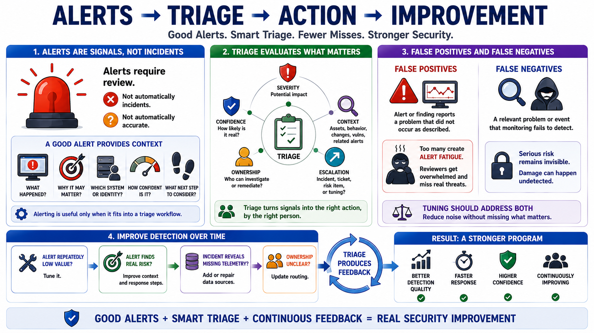

Alerting, Detection, and Triage
Connecting to LMS... Progress: in progress

Narration
Alerts are signals that require review. They are not automatically incidents, and they are not automatically accurate. A good alert gives enough context for a reviewer to understand what happened, why it may matter, which system or identity is involved, how confident the detection is, and what next step should be considered. Alerting is useful only when it fits into a triage workflow.
Triage evaluates severity, confidence, context, ownership, and escalation need. Severity considers potential impact. Confidence considers how likely the signal is to represent a real problem. Context considers asset criticality, user behavior, recent changes, known vulnerabilities, and related alerts. Ownership determines who can investigate or remediate. Escalation determines whether the issue should become an incident, a ticket, a risk item, or a tuning opportunity.
False positives and false negatives are both important. A false positive is an alert or finding that reports a problem that did not occur as described. Too many false positives create alert fatigue, where reviewers become overwhelmed and meaningful signals are easier to miss. A false negative is a relevant problem or event that monitoring fails to detect. False negatives can leave serious risk invisible. Tuning should address both.
Detection improves over time when teams document decisions. If an alert is repeatedly low value, tune it. If an alert finds real risk, improve context and response steps. If an incident reveals missing telemetry, add or repair data sources. If ownership is unclear, update routing. Continuous monitoring is strongest when triage produces feedback, and feedback improves detection quality, response speed, and confidence in the program.